ԲՆՈՒԹԱԳԻՐ
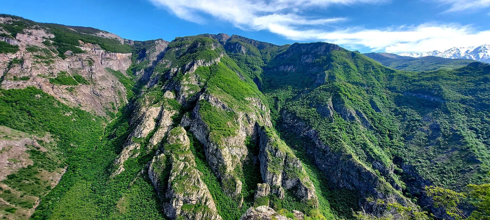
ՏՎՅԱԼՆԵՐ
Ուղղություն
Հյուսիսից
Արևմուտքից
Արևելքից
Հարավից
Սահմանակից մարզեր
Վայոց Ձոր
–
–
–
Հարևան երկրներ
-
Նախիջևանի ԻԻՀ
Ադրբեջան
Իրան
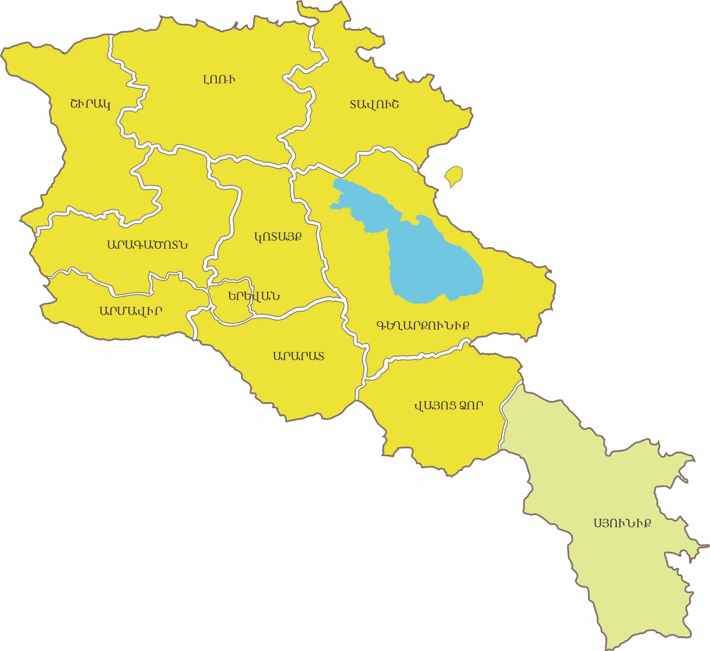
Հիմնադրումը
ՀՀ Սյունիքի մարզը կազմավորվել է 1995 թվականի դեկտեմբերի 4-ին:
Տարածքը
Մարզը զբաղեցնում է Հայաստանի ողջ տարածքի մոտ 15,1%-ը (4,506 կմ²), ցամաքային տարածքի չափերով Հայաստանում առաջինն է, բացարձակ չափերով զիջում է միայն Գեղարքունիքին:
Վարչական կենտրոնը
Կապան քաղաք: Գտնվում է Խուստուփ լեռան (3210 մ) ստորոտին, 750-1050 մ ծ.մ.բ. (միջինը՝ 910մ),Երևանից 301 կմ հարավ-արևելք, ԻԻՀ –ից՝ 80 կմ հյուսիս: Մայրաքաղաքից հետո ՀՀ ամենախոշոր քաղաքն է՝ Երևանից մինչև Իրան ընկած տարածքում: «Կապան» բառը նշանակում է «կիրճ» «լեռնանցք»: Որպես բնակավայր հիշատակվում է մ. թ. V դարի վերջերից, իսկ որպես քաղաք՝ X դարի վերջից: Սյունիքի թագավորության մայրաքաղաքն է եղել՝ 997թ-ից-1003 թ.:
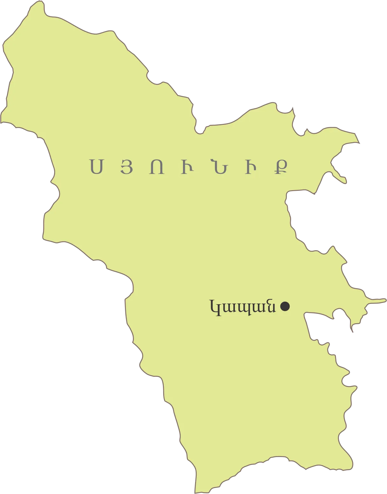
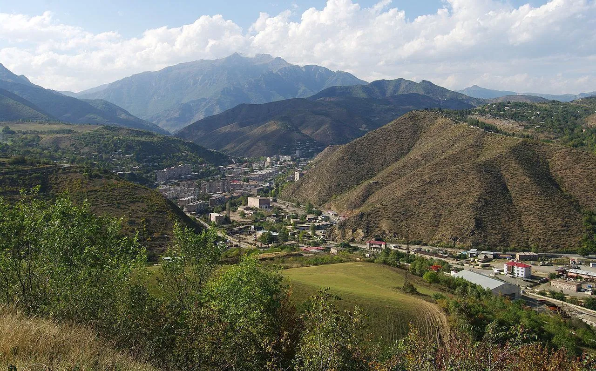
Ցուցիչ
Տարածք
Կոորդինատներ
Բարձրություն
Ամենաբարձր գագաթ
Ամենացածր կետ
Վարչական կենտրոն
Տարածաշրջաններ
Քաղաքներ
Գյուղեր
Բնակչություն
Հեռավորություն Երևանից
Փոստային կոդ
Թեժ գիծ
Վեբ կայք
Տվյալ
4,506 կմ² (15,1%)
40°25′ հս.լ., 44°10′ ավ.ե.
380–3,906 մ
Կապուտջուղ լեռ, 3,904 մ
375 մ (Արաքսի հովիտը Մեղրու կիրճում)
Կապան
Կապան, Գորիս, Սիսիան, Մեղրի
Կապան, Գորիս, Սիսիան, Դաստակերտ, Մեղրի, Ագարակ, Քաջարան
131
140,300 (4,7%) (2017թ)
238 կմ
3201–3519
(+374 285) 4-42-95
http://syunik.mtad.am/
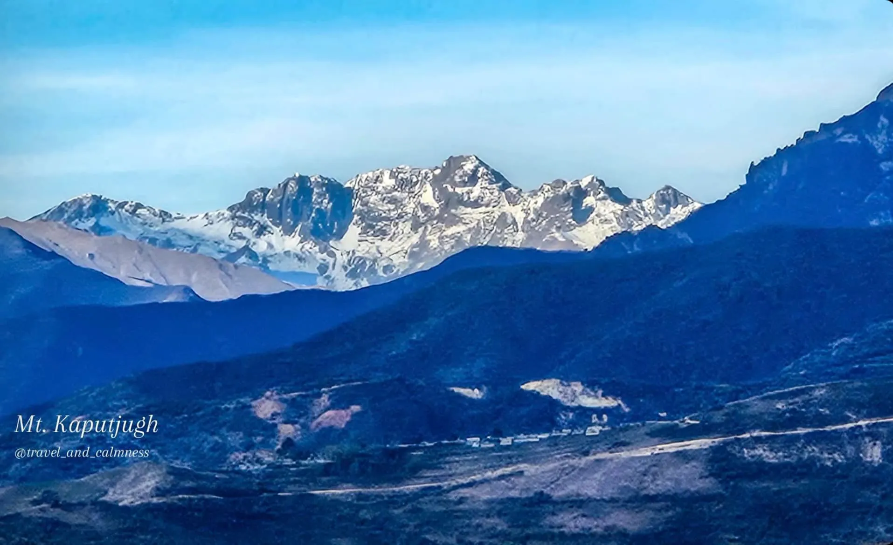
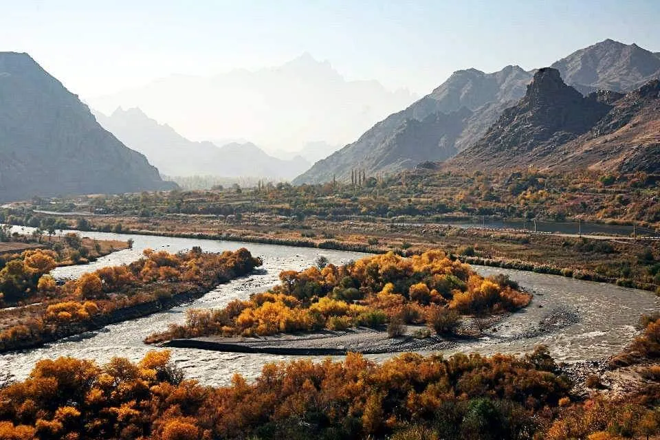
Ամենաբարձր գագաթ - Կապուտջուղ լեռ, 3,904 մ
Մարզային հեռախոսային կոդեր
Բնակավայր
Կապան
Գորիս
Սիսիան
Քաջարան
Մեղրի
Ագարակ
Տաթև
Կոդ
285
284
283
285
286
286
284
Մարզպետարան/Կապ
Հասցե․ ք. Կապան, Գ. Նժդեհի 1
Հեռ․ (+374) 0 285 4-42-91
Ֆաքս․ (+374) 060-51-78-22,
Էլ․ հասցե․ syunik@mta.gov.am
Վեբ/Կայք http://syunik.mtad.am
-
-
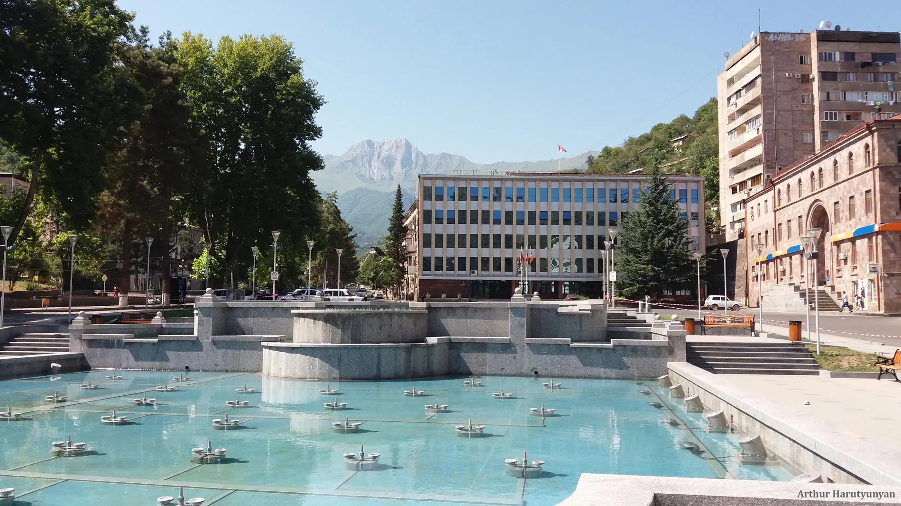
ԻՆՉՊԵՍ ՀԱՍՆԵԼ
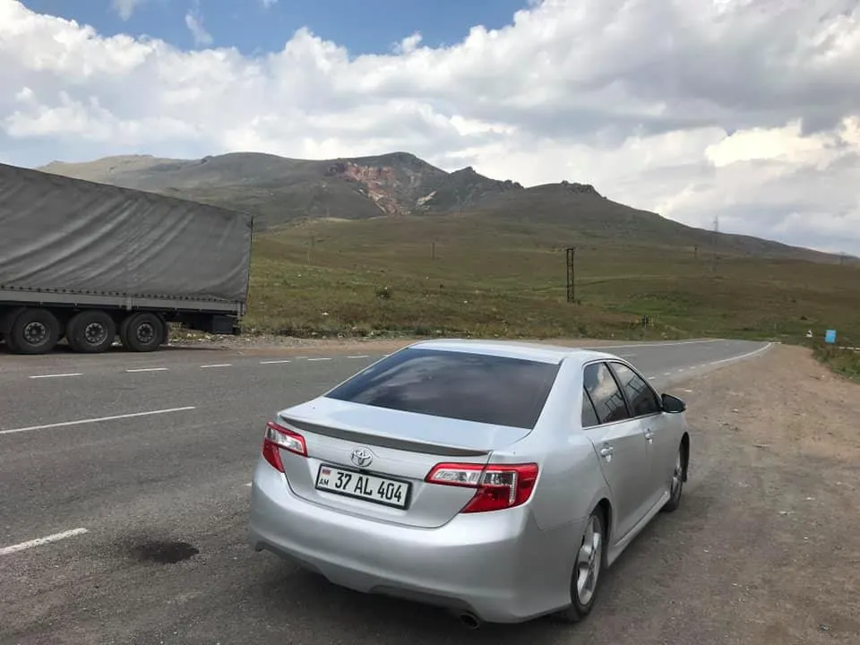
Ավտոմայրուղիներ
- Մարզի տարածքով անցնում են հանրապետական նշանակության միջպետական ավտոմոբիլային ճանապարհներ։
-
Մ-2՝ Երևան–Երասխ–Գորիս–Մեղրի–Իրանի սահման։
- Մարզի տարածքով անցնող Մ-2 մայրուղին Հայաստանը ցամաքային անմիջական կապով կապում է Իրանի Իսլամական Հանրապետության հետ։
- Մ-12՝ Գորիս–ԼՂՀ սահման (նախկինում)
- Մ-13՝ Մ2–Անգեղակոթ–Նախիջևանի սահման
- Մ-17՝ Մ2–Կապան–Ծավ–Մ2
- Ռազմավարական մայրուղի «Կապան–Ծավ–Մեղրի»
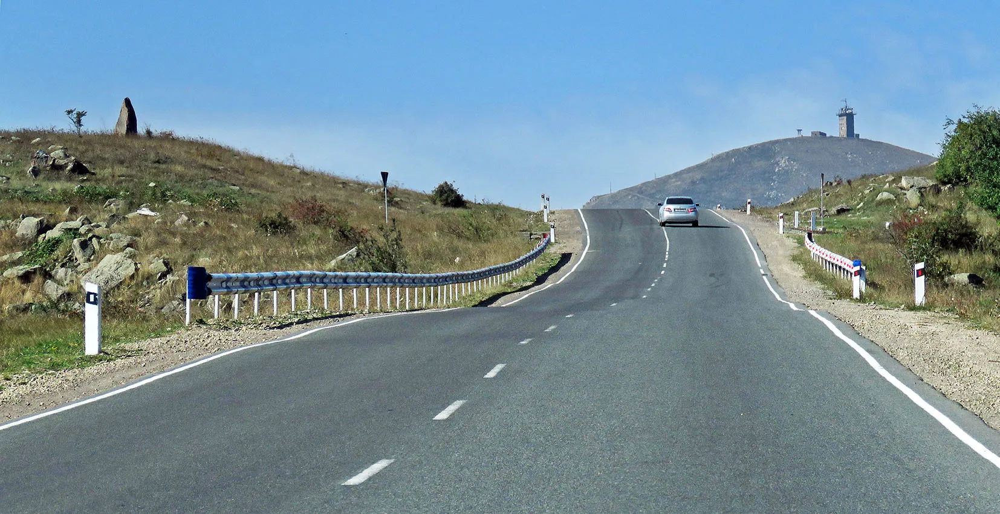
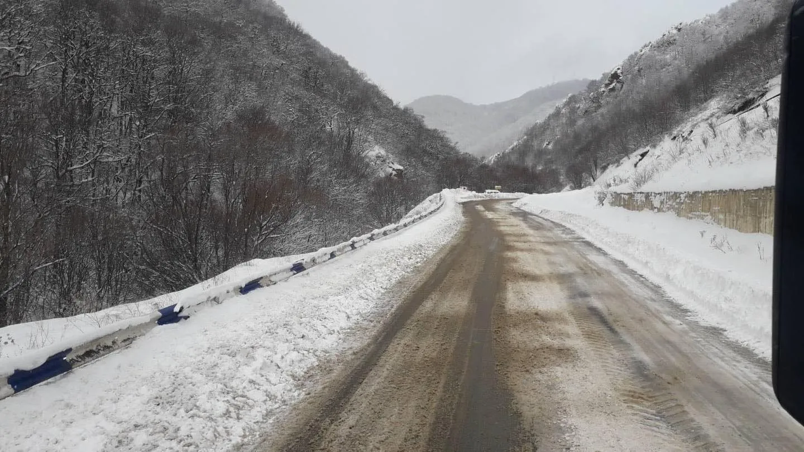
Երթուղային տաքսի
- Երևանից Կապան կարելի է մեկնել «Կիլիկիա» և Հյուսիսային ավտոկայաններից։
- Երթուղայինները հասնում են Կապան մոտ 8 ժամում։
- Արժեքը՝ 7,000 դրամ։
Միկրոավտոբուսներ / Տաքսի
-
Մասնավոր ընկերությունները իրականացնում են
ուղևորափոխադրումներ Կապան–Երևան և Երևան–Կապան երթուղիներով
Mercedes Viano, Toyota Camry, Toyota Corolla մակնիշի
հարմարավետ ավտոմեքենաներով։
- Mercedes Viano՝ 8+1 նստասեղ, համալրված է օդորակիչ, Wi-Fi և DVD համակարգ։
- Հեռախոս՝ +374 98-44-14-04
- Արժեքը մեկ անձի համար՝ 7,000 դրամ։
Ճոպանուղի
Կատարվում է նաև ծանրոցների տեղափոխում ավտոմոբիլային, երկաթուղային և էլեկտրատրանսպորտով (ճոպանուղի)։
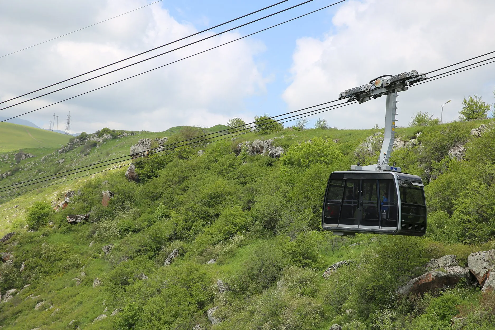
Օդային տրանսպորտ
- Սյունիքի (Կապանի) օդակայանը գտնվում է Կապանից ոչ հեռու։
- Երևանից Սյունիք և հակառակ ուղղությամբ օդային տրանսպորտով։
- Օդանավակայանը սպասարկում է միայն ներքին չվերթներ, որոնք իրականացվում են ամեն երկուշաբթի և ուրբաթ։
ԿԼԻՄԱ
Սյունիքի կլիման բարեխառն լեռնային է: Ըստ բարձրությունների, այստեղ հերթափոխվում են Հայաստանի տարածքին բնորոշ գրեթե բոլոր կլիմայական տեսակները՝ չոր մերձարևադարձային, միջին տաք, բարեխառն, ցուրտ լեռնային և ձյունամերձ կլիմաներ:
Կլիմայի առանձնահատկություններ
Մարզի կլիմայի վրա ազդող ընդհանուր գործոններից են՝ աշխարհագրական դիրքը, բարձրություններն ու տեղական գոտիականությունը։
- Ամռանը ակտիվ են հարավից ներթափանցող արևադարձային տաք ու չոր օդային զանգվածները։
- Ձմռանը զգալի է հյուսիսից եկող ցուրտ օդի ազդեցությունը։
- Կլիմայի վրա մի փոքր ազդում է նաև Կասպից ծովը։
- Սյունիքում է գտնվում Հանրապետության ամենատաք վայրը՝ Մեղրու ցածրադիր գոտին:
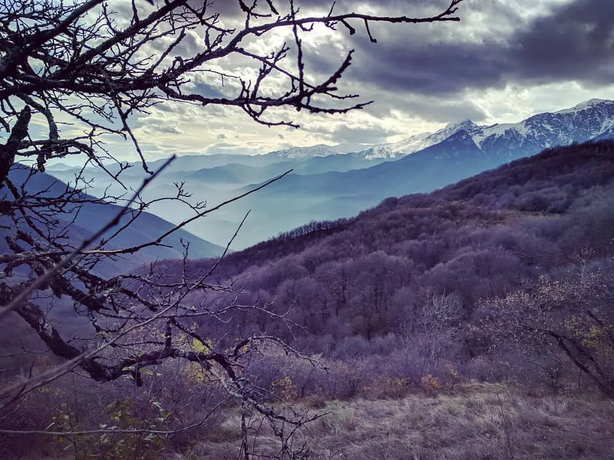
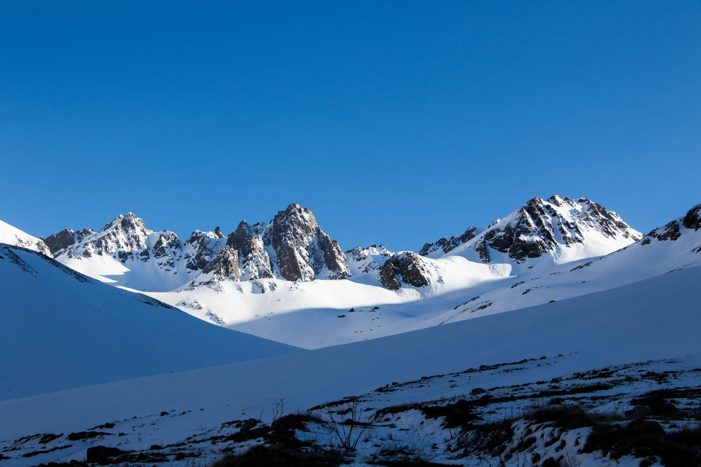
Եղանակների բնութագիր
Ձմեռ - սառցաշերտ, տարբեր տեղերում կայուն կամ ոչ միշտ
Գարուն – անձրևոտ, հաճախակի տեղատարափ
Ամառ - կարճատև զով կամ տաք, երբեմն նաև շոգ
Աշուն – մեղմ, արևոտ օրեր
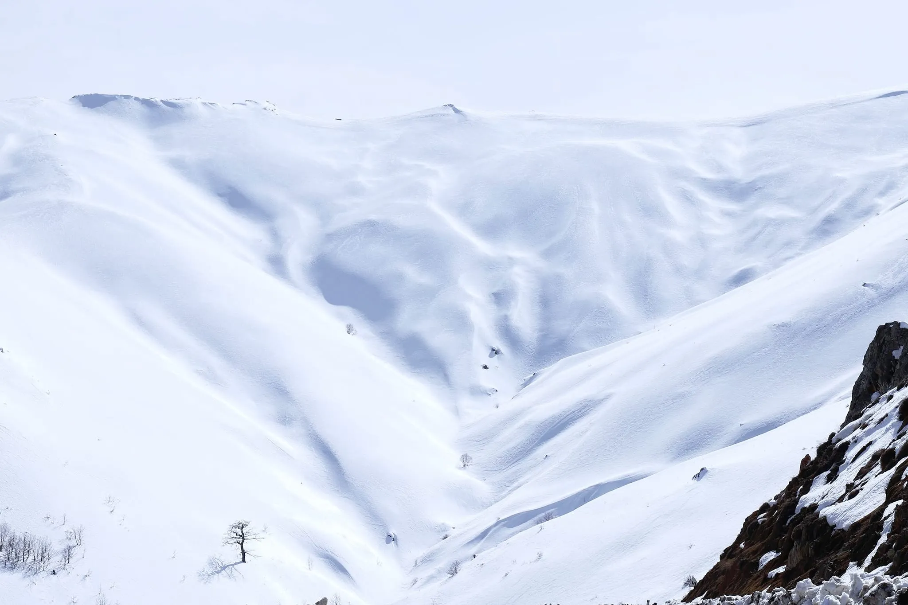
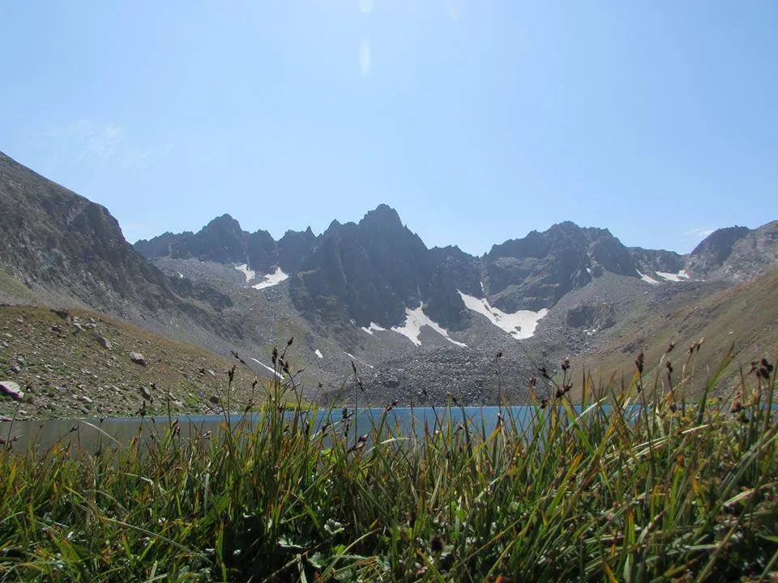

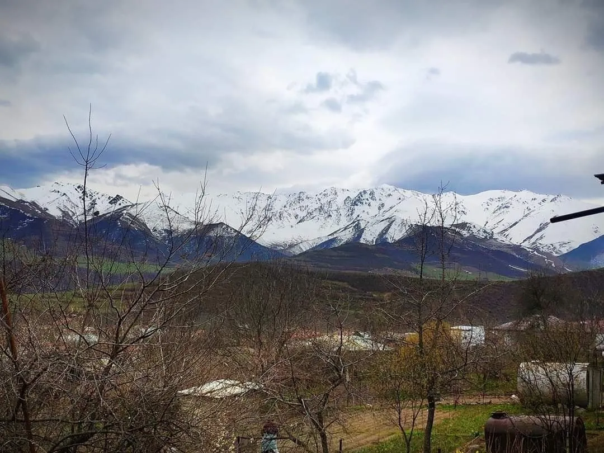
Օդի միջին ջերմաստիճան
- Ջերմաստիճանը տարբեր է բարձրության գոտիներում
- Հունվար՝ ցածրադիր վայրերում -2 °C- 9, 8 °C (Մեղրի), բարձրադիր վայրերում՝ -9.8–14 °C (Գորայք, Սիսիան)
- Հունիս՝+13 °C
- Հուլիս՝ +13.9 °C ից +20 °C
- Օգոստոս՝ մինչև +25.4 °C, առավելագույնը՝ +40 °C (Ագարակ, Մեղրի)
Տեղումներ
- Տեղումները՝զգալիորեն ավելի շատ են լեռնային գոտիներում
- Տեղումների միջին տարեկան քանակը կազմում է 250մմ (Մեղրի) –800 մմ(Կապան)
- Ցածրադիր գոտում ձնածածկույթ առաջանում է ոչ ամեն տարի
Քամիներ
- Գտնվելով մերձարևադարձային կլիմայական գոտու հյուսիսում, ամռանն ակտիվանում են հարավից թափանցող արևադարձային տաք և չոր օդային զանգվածները, ձմռանը՝ հյուսիսից եկող ցուրտ օդը:
- Քամու հիմնական ուղղությունը համապատասխանում է գետերի հովիտների ուղղությանը
- Միջին արագությունը՝ 1–4մ/վ
- Առավելագույն պոռթկումը՝ 32մ/վ
Արևափայլ
- Արևափայլքի միջին տարեկան տևողությունն է՝ 2120 ժամից (Գորիս) մինչև 2700 ժամ (Մեղրի)
- Ամպամած օրերի միջին թիվը՝ 40
- Անարև օրերի թիվը՝ 59
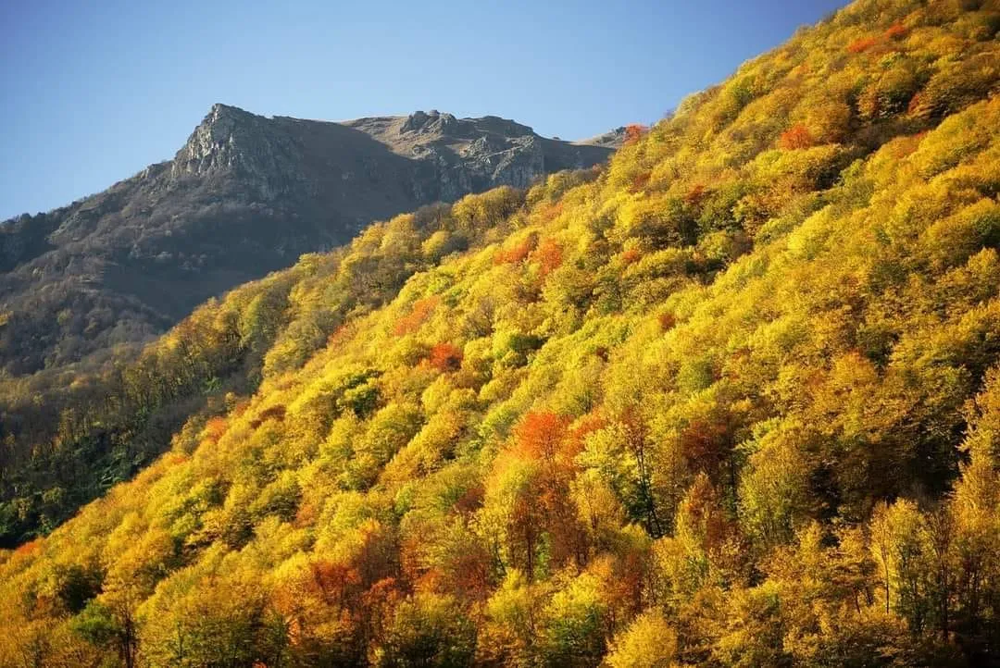